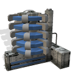

Glass factory
Glass factories will use silica and energy to produce glass which will get a higher sale price than silica. Building this colony improvement in regions where silica is abundant will have a positive effect in trading income.
